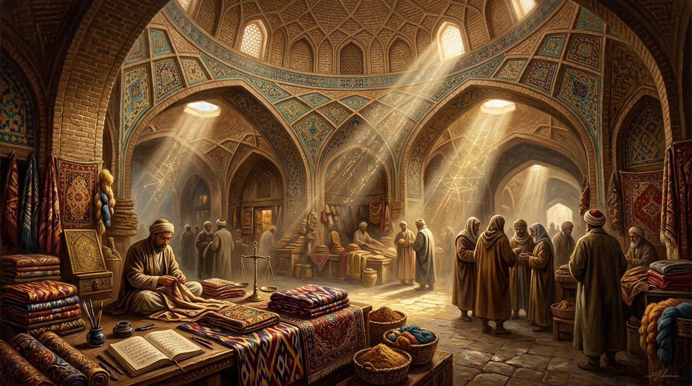
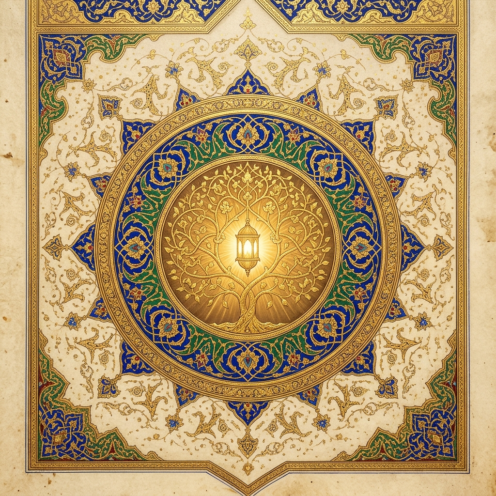
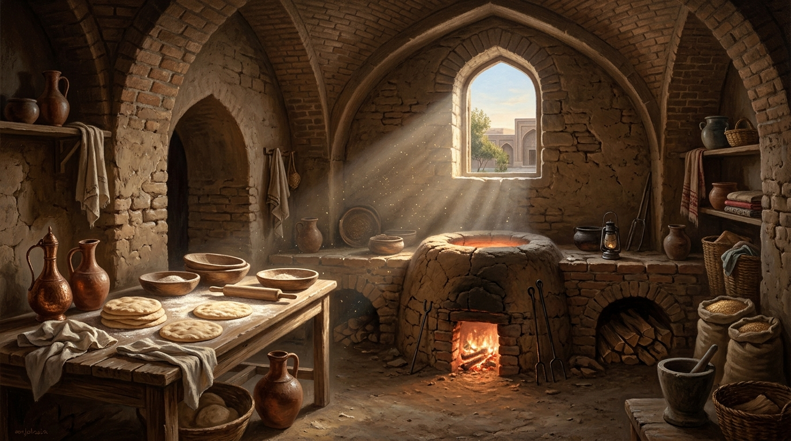
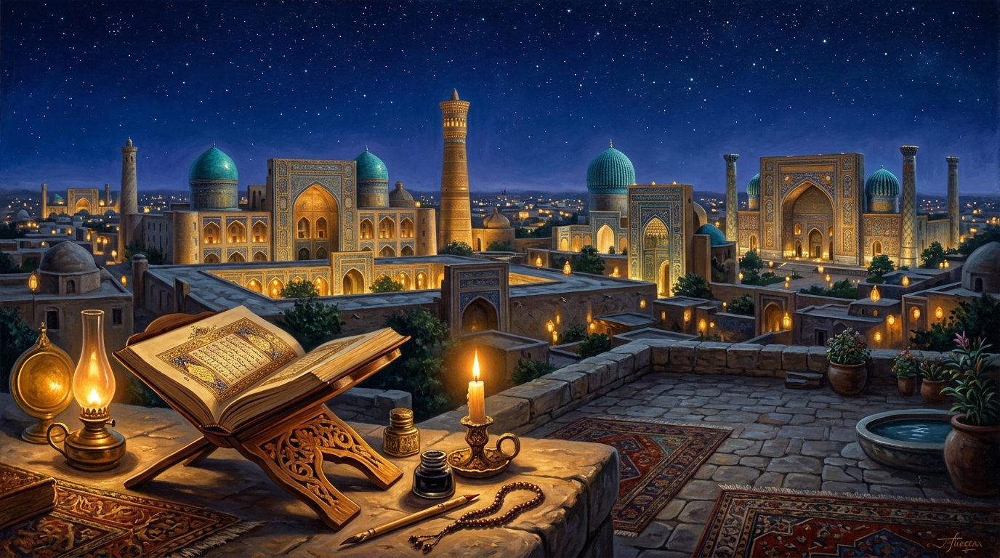
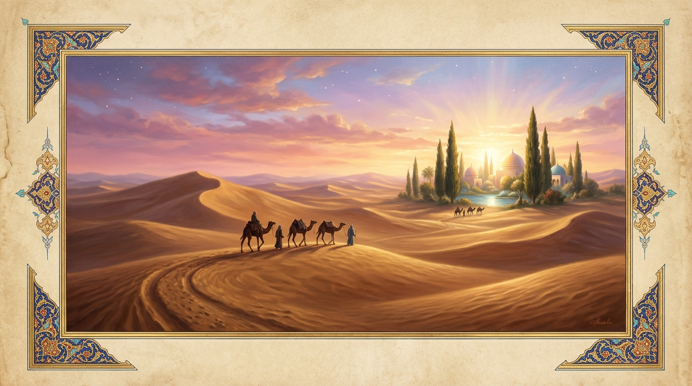

1. Gönüller Sultanı Şah-ı Nakşibend ve Aşkın Çekim Gücü
Tasavvuf tarihinde pek çok büyük veli "şeyh" veya "pir" unvanıyla anılırken, o manevi tahtın yegâne sahibi gibi "Şah" ismiyle yad edilmiştir. Bu derin çekim gücünün sırrı Doğu hikmetinin en temel ilkelerinden birinde saklıdır: "Güzele karşı güzel sevilir."
Hakiki güzelliğin bir formülü, şablonu ya da mantıksal bir izahı yoktur; o biçunsuz ve biçeradır (niçinsiz ve nedensizdir). Nitekim Hz. Yusuf (a.s.) pazar meydanında göründüğünde, onun yüzündeki ilahi tecelliye kapılan kadınlar ellerindeki bıçaklarla parmaklarını doğramış ve "Bu bir insan olamaz, ancak kerim bir melektir" diyerek kendilerinden geçmişlerdi. İşte Şah-ı Nakşibend Hazretleri’nin gönüllerde uyandırdığı o sönmez muhabbet, Cenâb-ı Hakk’ın onun şahsında tecelli ettirdiği bu "biçun" ilahi güzelliğin ve feyzin bir yansımasıdır.
2. Peygamberî Veraset: Fiziki ve Manevi Benzerlik
| Büyük Veli | İrsiyet Yoluyla Tezahür Eden Özellik / Keramet |
|---|---|
| Abdülkadir Geylani Hazretleri | Hem Hasanî hem Hüseynî nesebinden Seyyiddir. Hz. Peygamber’e (s.a.v.) sinek ve toz konmaması mucizesi, en kavurucu çöl yolculuklarında dahi üzerine hiç toz ve sinek konmaması şeklinde kendisinde keramet olarak görülmüştür. |
| Şah-ı Nakşibend Hazretleri | Peygamber soyundan gelen Seyyiddir. 17 yaşında dergahta ekmek pişirirken elinin değdiği hamurların ateşte pişmemesi ve mürşidinin emriyle tandıra elini soktuğunda alevlerin geri çekilmesi şeklinde irsiyet tezahür etmiştir. |
3. İki Temel Tasavvufi Düstur ve Halifeleri
"El kârda, gönül yârda"
Bedenen çarşıda, pazarda, işte veya ticarette çalışırken kalbin kesintisiz bir biçimde Allah ile beraber olmasıdır. Buhara çarşısındaki genç kumaş tüccarı ve Bayezid-i Bestami’nin "30 yıldır Allah'tan başkasıyla konuşmadım" sırrıdır.
"Eller yahşi ben yaman, eller buğday ben saman"
Nefsi kınama, kendini herkesten aşağı görme ve yokluğa talip olma durağıdır. "Saman" olmayı ve yokluğu kabul etmeyenler, ilahi azametle bezenemezler.
"Bundan Büyük Keramet mi Olur?"
"Bu kadar günahla ayakta duruyoruz, bundan büyük keramet mi olur?" diyerek kerameti olağanüstü hallerde değil, Sünnet-i Seniyye üzere istikamette göstermiştir.
Sanat, Tezhip ve Mimari Görsel Koleksiyonu
Buhara-yı Şerif ve Kasr-ı Ârifân
Gönül sultanlarının ocağı Buhara ve Şah-ı Nakşibend Hazretleri'nin türbe külliyesi.

"El Kârda, Gönül Yârda"
Tarihi Buhara bedesteninde helal kazançla meşgul olurken kalbi Hak'tan kopmayan tüccar.

Silsile-i Zeheb (Altın Silsile)
Lâcivert ve zümrüt şemse içerisinde Silsile-i Aliyye nur ağacı ve ilahi muhabbet kandili.

17 Yaşındaki Tandır Hadisesi
"O, Dedesi Peygamber'in soyundandır; onun elinin değdiği şeyi ateş yakmaz."

Semerkant ve Buhara Gecesi
Enîsü't-Tâlibîn, Risâle-i Kudsiyye ve Reşahât'ın kaleme alındığı medrese ve irfan iklimi.

Sonsuzluk Kervanı
Varlık iddiasından soyunup yokluğa talip olanların manaya doğuş yolculuğu.
Tarikatın 11 Temel Prensibi (Kelimât-ı Kudsiyye)
Silsile-i Zeheb (Altın Silsile) ve Buhara’nın Yedi Pîri
| # | Büyük Veli / Halka | Vefat (H/M) | Türbesi / Medfun Olduğu Yer | Kol / Dönem |
|---|
Âlimler, Mütefekkirler ve Aydınların Gözüyle Şah-ı Nakşibend
İmam-ı Rabbânî (k.s.)
"Hâce Bahaüddin Nakşibend Hazretleri’nin yolu, Ashâb-ı Kirâm’ın yolunun ta kendisidir. Diğer yollarda sonda ulaşılan kalbî huzur, onun yolunda daha ilk adımda sohbetle ele geçer."
Mevlânâ Abdurrahman Câmî
"Sikke-i merdân-ı Hudâ Nakşibend / Der dil-i mâ nakş-ı Hudâ Nakşibend. (Allah erlerinin kalbine vurulan mühür Nakşibend’dir; gönlümüze Allah’ın nakşını işleyen de Şah-ı Nakşibend’dir.)"
Emîr Ali Şîr Nevâî
"Hâce Bahaüddin Nakşibend, Türkistan ve Maveraünnehir semasının sönmez güneşi, ilahi aşk nakşını gönül levhasına vuranların şahıdır."
Necip Fazıl Kısakürek
"Velilerden bir ordu kurulsa ve bunların başbuğlarından da ayrı bir ordu kurulsa hepsinin komutanı Şah-ı Nakşibend olur."
Sezai Karakoç
"Onun 'El kârda, gönül yârda' ilkesi, İslam insanının hem dünyayı imar eden hem de kalbini sonsuzluğa bağlayan en sağlam medeniyet tezidir."
Nurettin Topçu
"Hakiki tasavvuf, dünyadan kaçıp miskinleşmek değil; Şah-ı Nakşibend’in 'El kârda, gönül yârda' düsturunda ifadesini bulan, emeğin kalbinde Allah ile beraber olma ahlakıdır."